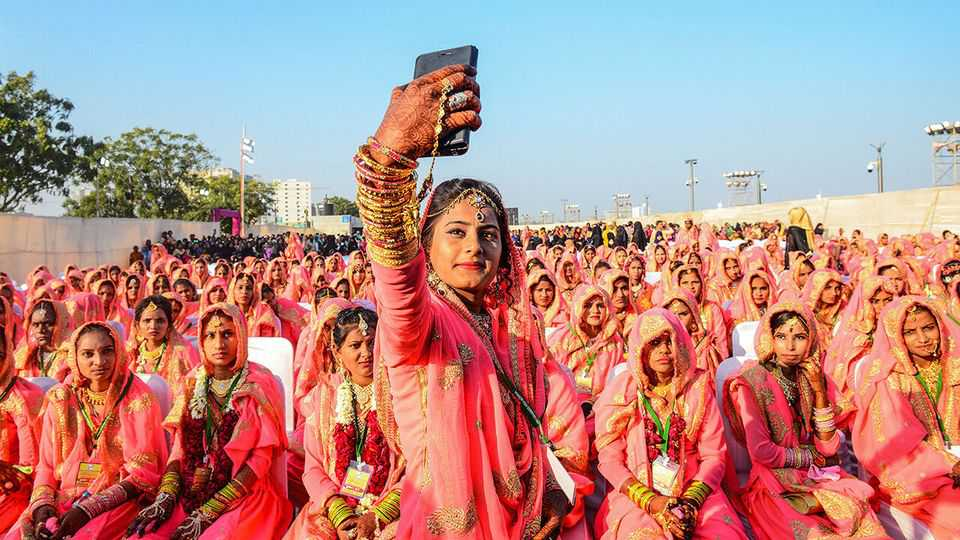

Should every Indian follow the same rules?
The ruling party’s apparently liberal argument for making everyone marry, divorce and inherit like Hindus

Aug 13th 2026
AFTER RETURNING from sunset prayers in the mosque next door, Khursheed Ahmed shoos away his all-male entourage to talk to a female journalist. The 71-year-old community leader is glum. A law he spent months unsuccessfully campaigning against has put him in a quandary. How, he wonders, can a person be both a God-fearing Muslim and a law-abiding Indian? “If you don’t follow sharia, you are not a Muslim,” he says. But since January 2025 it has been illegal for Muslims in Mr Ahmed’s home state of Uttarakhand to obey many of their customary family laws.
This is what awaits much of India. Uttarakhand, up in the Himalaya, was the first state in independent India to be subject to a uniform civil code (UCC), meant to apply to almost all its citizens regardless of creed. The code aims to replace religion-based personal laws with a single rulebook for marriage, divorce, inheritance and adoption. So far this year, codes that are in essence identical have been passed by legislators in the states of Assam, Gujarat and Madhya Pradesh, though none is yet in force; another five states are planning to follow. If West Bengal passes its own law, as expected this month, close to 30m more Muslims will face Mr Ahmed’s dilemma.
All the states passing a UCC into law are ruled by the Bharatiya Janata Party (BJP), the Hindu-nationalist outfit that runs the country and many of its states. It took over West Bengal after state elections in April. The BJP presents the new codes as a matter of universal human rights, in particular women’s rights. But look more closely and what is actually going on is a process of imposing on religious minorities the laws and customs that Hindus already follow.
The basic principle looks fair and simple: every Indian should follow the same law. The reason they do not goes back to the trauma of partition. After the departing British split India into a Muslim-majority Pakistan and a Hindu-majority India in 1947, India’s Hindus wanted to soothe the anxieties of the new country’s minorities. They drew up a constitution that let religious groups, including Muslims, govern their own civil matters.
No longer. The universal codes extend to Muslim daughters the same equal inheritance rights that Hindu daughters won in 2005. They criminalise polygamy for Muslim men. Talk to Muslim women in Uttarakhand and many are pleased to see such fixes. That makes it easy to dismiss critics as conservative cranks. “Hard-core Islamists think you cannot tinker with God’s will,” says Shatrughna Singh, a Hindu, who sat on Uttarakhand’s drafting committee and now oversees the law’s roll-out there.
But the reality is that the codes are not an instrument of women’s liberation, or indeed liberalism of any kind. One of the Uttarakhand code’s provision, for instance, requires all couples to register a live-in relationship with the state within 30 days or risk a prison sentence. State and party officials insist that the aim is to protect women from exploitative men by bringing informal liaisons out of the shadows. But many lovers avoid a formal set-up precisely to protect themselves from prying eyes—especially those in unconventional relationships, say, between castes or creeds. The code potentially makes the relationship everyone’s business. Under some versions of it, faith leaders, parents and even the general public can object and block couples from shacking up.
Nor do the new codes pick the most woman-friendly bits from India’s varying traditions. Take Muslim personal law. Under its dictates, women can generally escape toxic marriages faster than Hindu wives can. And they are also protected by mehr, a payment that a husband-to-be must make at the time of marriage to ensure his wife’s financial independence. Yet Uttarakhand’s all-Hindu UCC drafting committee “basically copy-pasted” what used to be Hindu personal laws and imposed them on religious minorities, says Saumya Saxena, a legal scholar at India’s Jindal Global University.
The UCC does nothing to correct injustices in Hindu law that still often exclude widows, wives and mothers from inheriting ancestral property. It draws no inspiration from India’s tribal communities, which often treat women best of all; tribal communities (who, note critics, often vote BJP) are excluded from the codes.
When Uttarakhand officials face a foreign audience, they make sure to call the law “progressive” and “secular”. But religion quickly intrudes on their logic when they explain why the code was first tried out in Uttarakhand, where the BJP has ruled for most of the state’s 25-year history. The state, which floods with pilgrims at this time of year, is as holy to Hindus as Jerusalem is to Jews, they say. They claim the Muslim population is exploding and mutter about an “expansionary mindset” that drives Muslim men to marry many wives, supposedly to outbreed Hindus.
On the surface, Uttarakhand’s experiment seems largely symbolic. The first criminal case under the new law came only this April, when a woman objected to her husband’s attempt to make use of halala, an archaic Muslim divorce custom. As of early July, fewer than 100 couples in a state of 12m people had formally fessed up to their live-in relationship. But over time, the law may push Muslims even further from the mainstream. Mr Ahmed advises fellow Muslims to shun courtrooms and to quietly fix disputes within the community. That might end up increasing divergence rather than removing it.
Uttarakhand was only a practice round for the BJP’s dream of making India a Hindu nation. In the conservative Hindu state, resistance to the new laws was muted and their roll-out uneventful. Now Uttarakhand’s Mr Singh has a new job sitting on the drafting committee in West Bengal. It is close to 30% Muslim, roughly twice the national average, and famous for its always vibrant and often violent politics. Until May it was one of the few states that had never been ruled by the BJP. When the assembly starts to debate its own new civil code, some observers fear unrest. ■
Stay on top of our India coverage by signing up to Essential India, our free weekly newsletter.